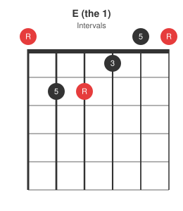
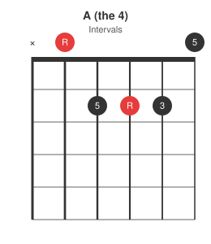
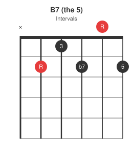

Ask a blues band what they are about to play and the answer is usually three numbers: "blues in E, quick change". That is the whole chart. The Nashville Number System makes this possible because the 12-bar blues is not really a set of chords, it is a set of relationships: the 1, the 4, and the 5 of whatever key you are in, arranged in a pattern that has not changed in a hundred years.
The form
Twelve bars, three chords, one line per four bars:
1 1 1 1
4 4 1 1
5 4 1 1
Read it as a story in three acts. The first line sits at home on the 1. The second line steps away to the 4 and comes back. The third line builds tension on the 5, softens through the 4, and lands home again, ready to repeat.
Bar 12 is the turnaround. The last bar's job is to point back to bar 1. The simplest version replaces the final 1 with a 5; fancier versions walk up chromatically into the 5 chord. Either way, the listener hears "here we go again" rather than "the end".
Common variations
The grid above is the base form, but bands rarely play it completely straight. All the common variants keep the same twelve-bar skeleton and change one or two cells.
Quick change. Bar 2 becomes a 4, which stops the four opening bars of 1 from feeling static. This is the most-called variant; note the turnaround 5 written into bar 12:
1 4 1 1
4 4 1 1
5 4 1 5
Long 5. Bar 10 stays on the 5 instead of dropping to the 4, holding the tension a bar longer. Common in early rock and roll:
1 1 1 1
4 4 1 1
5 5 1 1
Minor blues. Same skeleton with the 1 and 4 as minor chords, and a b6 chord adding drama in bar 9 before the 5. In A minor that third line is F, E7, Am, E7:
1- 1- 1- 1-
4- 4- 1- 1-
b6 5 1- 5
Jazz blues. Jazz players keep the twelve bars but recolour the third line, most noticeably replacing the 5-4 of bars 9-10 with a 2-5 cadence. Worth recognising when someone counts in "Straight No Chaser", but it is its own rabbit hole.
Whatever the variant, someone can call it in a few words ("quick change", "hold the five") because everyone shares the same numbered map.
Chords by key
Because the form is written in numbers, playing it in a new key is a lookup, not a transposition exercise:
| Key | 1 | 4 | 5 |
|---|---|---|---|
| E | E | A | B |
| A | A | D | E |
| G | G | C | D |
| D | D | G | A |
| C | C | F | G |
E and A are the guitar keys: the chords sit in open position and the boogie patterns below fall under the fingers. Horn players will call for Bb or F; that is what barre chords and a capo are for.
Plain major chords work fine. For more of a blues feel, swap any or all of them for dominant 7ths (E7, A7, B7): the added b7 gives the chords that unresolved, gritty blues colour. The 5 chord is the most common place to start.
The three chords in E
Open E and A, plus B7, the friendliest way to play the 5 in this key (the full B barre chord is no fun in the middle of a shuffle):



The shuffle feel
The chord grid says nothing about rhythm, and rhythm is half the style. Blues is rarely played with even eighth notes: it is played with a shuffle (or swing) feel, where each beat is split long-short instead of half-and-half. Count it as triplets, "1-and-a, 2-and-a", and play only the first and last note of each triplet: the offbeat lands two-thirds of the way through the beat, not halfway.
The animation below shows one bar of eighth notes, each dot lighting up when it is played. The straight row pulses evenly; the shuffle row plays the same notes, but the offbeats arrive late:
Both rows play eight notes per bar, but the shuffle "&" notes wait until two-thirds of the beat has gone by, and each downbeat note rings twice as long as the offbeat that follows it. That lopsided lope is the blues feel; once you can hear it, you will notice straight eighths sound stiff in this style. Strum the twelve bars above with this feel and it already sounds like blues.
Why bother with the numbers?
Because the number chart is the only version you have to memorise. Learn the grid at the top of this post once and you now know the 12-bar blues in E, A, G, D, C, and every other key: the table converts numbers to chord names. When a jam leader calls "blues in A, quick change, watch for the stops", every word of that maps onto something in this post except the stops, and those are just bars where the band hits beat one and lets the singer have the rest.
Next in the series: variations on the open A shape, plus the D and E shapes, to grow the chord vocabulary used in this progression.